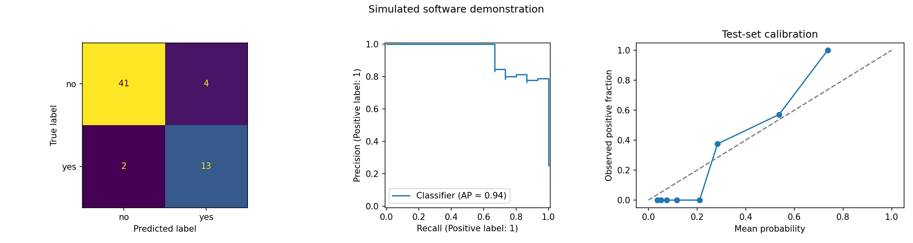

Data: SIMULATED demonstration fixture; not a real-data benchmark. Selected from validation: hist_gradient_boosting. Test rows were used only after calibration and threshold selection. Duration is excluded.
| model | threshold | selected_from_validation | accuracy | positive_f1 | precision | recall | average_precision | roc_auc | brier_score | log_loss | data_source |
|---|---|---|---|---|---|---|---|---|---|---|---|
| prevalence_baseline | 0.5000 | False | 0.7500 | 0.0000 | 0.0000 | 0.0000 | 0.2500 | 0.5000 | 0.1875 | 0.5623 | SIMULATED demonstration fixture; not a real-data benchmark |
| logistic_C1 | 0.5000 | False | 0.4833 | 0.3111 | 0.2333 | 0.4667 | 0.3878 | 0.5630 | 0.2566 | 0.7048 | SIMULATED demonstration fixture; not a real-data benchmark |
| random_forest | 0.5000 | False | 0.6500 | 0.2759 | 0.2857 | 0.2667 | 0.3379 | 0.5896 | 0.2069 | 0.6022 | SIMULATED demonstration fixture; not a real-data benchmark |
| hist_gradient_boosting | 0.5000 | True | 0.9000 | 0.7692 | 0.9091 | 0.6667 | 0.9351 | 0.9763 | 0.0890 | 0.3072 | SIMULATED demonstration fixture; not a real-data benchmark |
| hist_gradient_boosting_calibrated | 0.2961 | True | 0.9000 | 0.8125 | 0.7647 | 0.8667 | 0.9351 | 0.9763 | 0.0782 | 0.2735 | SIMULATED demonstration fixture; not a real-data benchmark |
| model | validation_average_precision |
|---|---|
| hist_gradient_boosting | 0.9689 |
| logistic_C1 | 0.5124 |
| random_forest | 0.4621 |
| prevalence_baseline | 0.2500 |
| feature | mean_AP_decrease | std_AP_decrease |
|---|---|---|
| day | 0.6465 | 0.0279 |
| balance | 0.0490 | 0.0038 |
| previous | 0.0148 | 0.0060 |
| age | 0.0105 | 0.0027 |
| campaign | 0.0103 | 0.0004 |
| job | 0.0044 | 0.0031 |
| housing | 0.0017 | 0.0043 |
| poutcome | 0.0000 | 0.0000 |
| education | 0.0000 | 0.0000 |
| default | 0.0000 | 0.0000 |
| contact | 0.0000 | 0.0000 |
| pdays | -0.0017 | 0.0000 |
| marital | -0.0026 | 0.0026 |
| loan | -0.0035 | 0.0026 |
| month | -0.0042 | 0.0092 |
